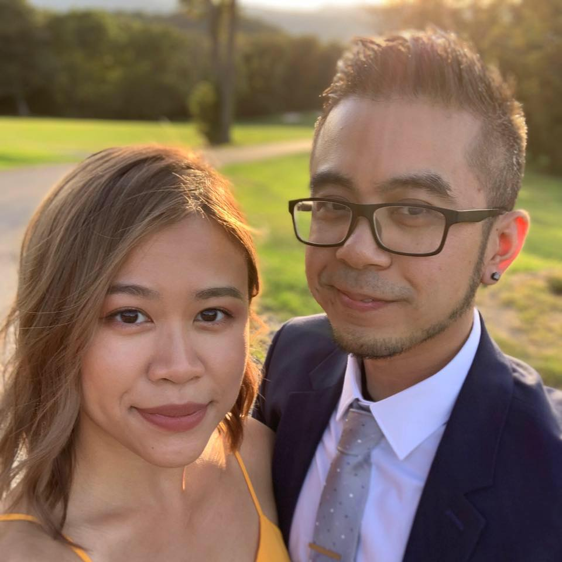

About Me

Hi Everyone, my name is Kyle and I most recently ran a GameStop in the Paramus, NJ area. My fiancé, Jenny, and I met in Buffalo, NY where we both attended the University at Buffalo. During my time in Buffalo, I graduated with a Bachelor's of Science in
Business Administration with a concentration in Marketing for the School of Management. I was also a proud member of the Filipino-American Student Association, also known as "FASA". This was a Student Association that taught many
aspects of the Filipino culture including such things as song, dance, food, politics, etc to not just other Filipnos but to anyone who wished to be educated on our background. During my final year, I was also a part of FASA's Executive
Board as the Public Relations Officer, which entailed me bridging the gaps between FASA and either other Student Associations or other students who may be interested in our Association.
After graduation, I remained in Buffalo for 3 more years as the General Manager of a high volume bubble-tea cafe called "Tea Leaf Cafe". This cafe was located minutes away from the university which contributed to its success (aside from the quality in
product and service of course).
When I landed a new job in Englewood Cliffs, NJ, it was time I returned back home to Bergen County to work for Advanced International Freight, Inc. I spent 2 years as a Freight Forwarder in the world of logistics moving containers internationally. AIF
moved many different types of product for their clients including hair and hair accessories, korean foods, household goods, and even hazardous chemicals and materials.
Having felt almost homesick regarding the customer service field, it was in my best interest to pursue one of the passions that I adore, video games. I set aside the financial stabilty to gamble on the world of retail at GameStop Inc. Who knew that a
seasonal employee in myself at one 4-hour shift a week, would later that year grow into leading my own store as the Store Manager of the Bergen Town Center location in Paramus, NJ for 3 years following.
Today, my fiancé and I live in Hackensack, NJ and we plan to get married July of 2021. On top of wedding planning, I also focus my shared attention towards the current course at hand attending the Rutgers Bootcamp in hopes of earning my certificate to
become a full-stack developer. I always hope to succeed in whatever field I may be in, to be able to provide a sustainable future for me and my loved ones.
If you have made it this far down the page, I appreciate the time you have taken to listen to my story and I hope I can continue inspiring people to reach for the futures they believe in.
Dance like no one is watching.
~ Kyle
~ Kyle